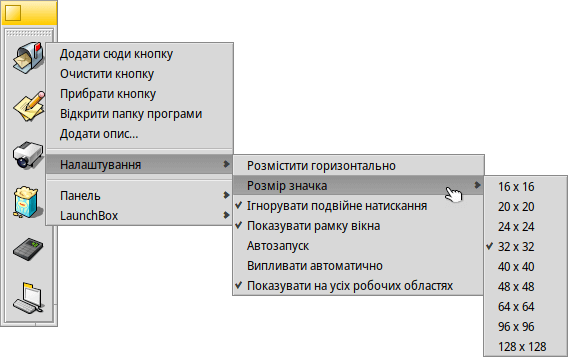

LaunchBox (Панель запуску)
| Deskbar: | ||
| Розташування: | /boot/system/apps/LaunchBox | |
| Налаштування: | ~/config/settings/LaunchBox/* |
Можна запустити один або декілька аплетів LaunchBox, щоб організувати панель з ярликами до Ваших улюблених програм або документів. Ви самі вирішуєте, відображати ярлики на усіх робочих областях чи лише на поточній робочій області. Ярлики можна використовувати для швидкого відкриття документа у певній програмі. Наприклад, Ви можете перетягнути HTML-файл до текстового редактора в LaunchBox, щоб відкрити його у редакторі, а не у браузері, як встановлено за замовчуванням.
Усі параметри та опції доступні з контекстного меню:
| Додає порожню кнопку. | |||
| Прибирає посилання на об'єкт. Робить кнопку порожньою. | |||
| Видаляє кнопку з панелі. | |||
| При наведенні курсора миші на піктограму кнопки, з'являється підказка з назвою файлу і, у випадку програми, її коротким описом, якщо він відрізняється від назви програми (дивіться розділ Типи файлів). За допомогою цього пункту меню Ви можете змінити текст цієї підказки. | |||
Вирівнює кнопки по горизонталі. Задає розмір значків у пікселях. Запускає об'єкт пов'язаний з кнопкою лише один раз, навіть якщо Ви (випадково) натиснете двічі. Відображає рамку вікна панелі. Запускає LaunchBox автоматично під час завантаження системи. Панель LaunchBox з’являється, якщо курсор миші знаходиться біля краю екрана. Показує панель запуску у кожній робочій області. | |||
Додає нову панель. Створює дублікат поточної панелі. Закриває поточну панель. | |||
Закриває всі панелі LaunchBox і виходить з програми. |